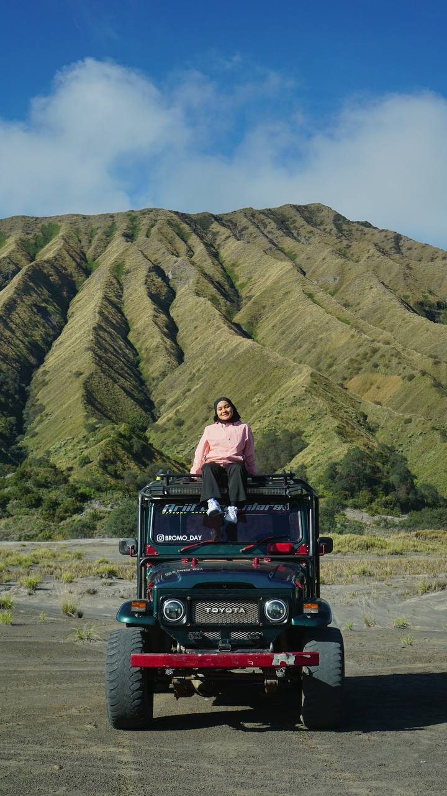
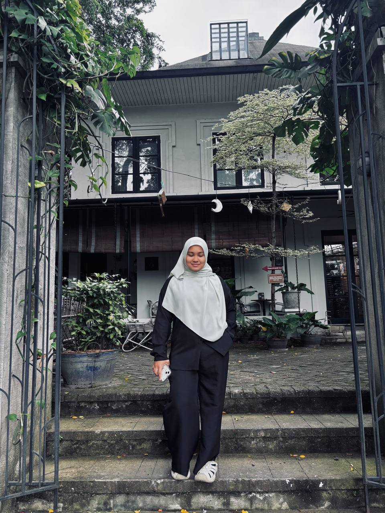
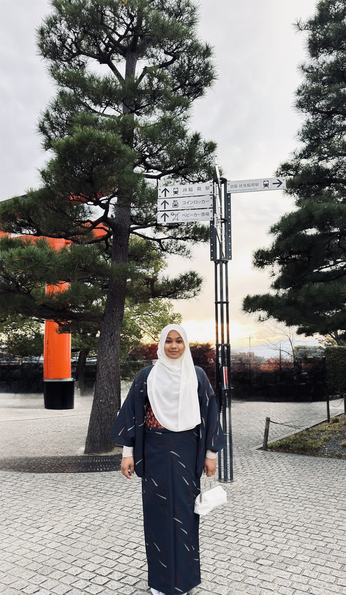
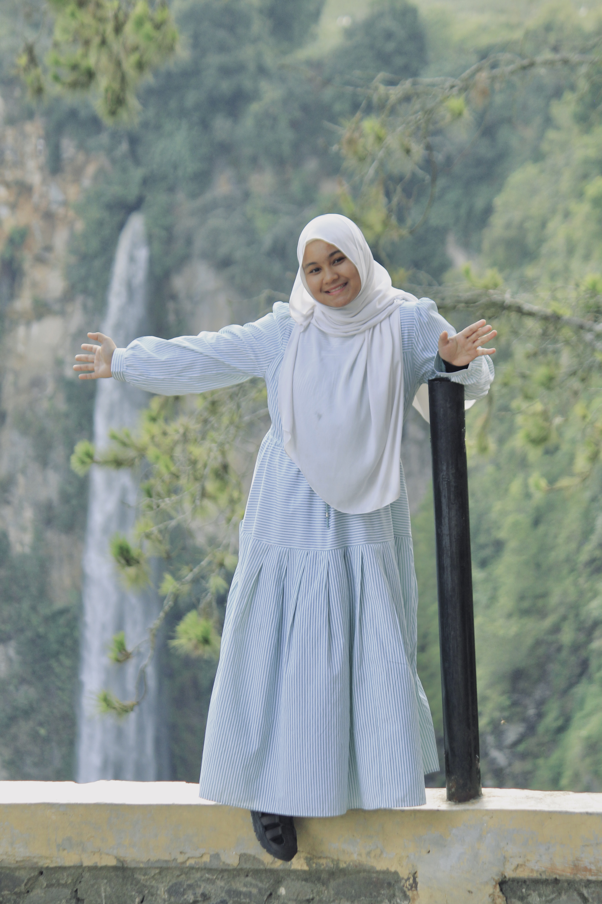
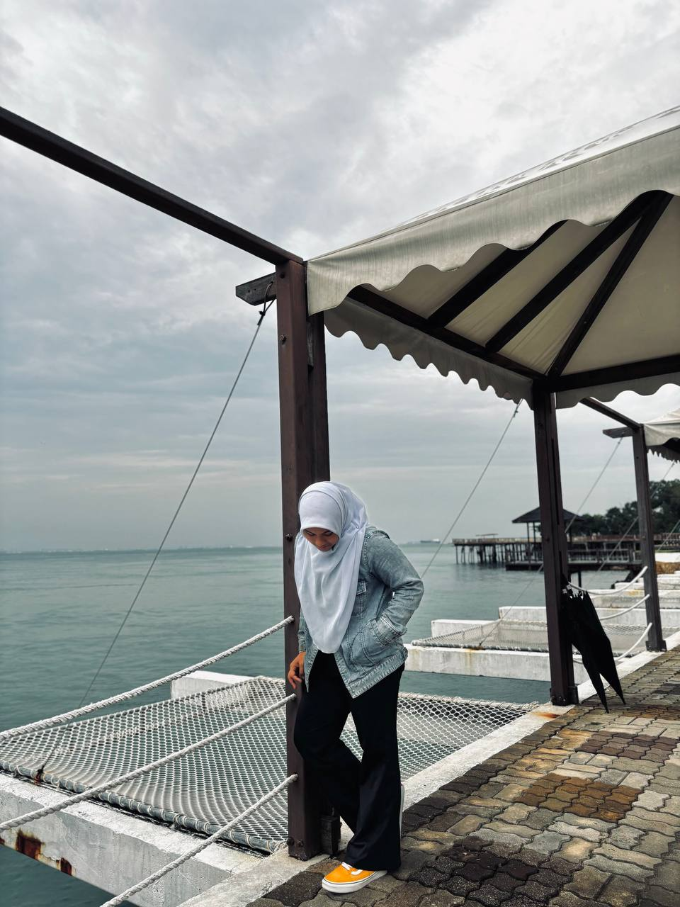
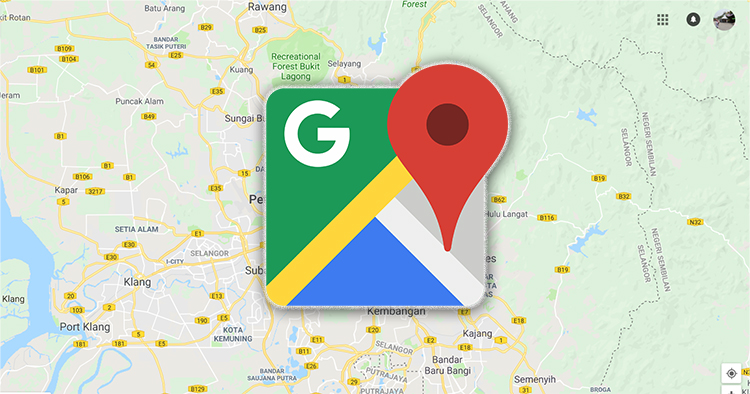

ABOUT ME

Mount Bromo

Jakarta

Japan

Brunei

Korea

Medan

Batam

Singapore
LIFE 2025 RECAP
ABOUT ME
My name is Nur Insyirah Wadhiah Binti Roslan. I love cats so much. Then, my family's members are 6, including me, and I'm the youngest. The gap between my sister and me is 10years and above.
I love to take photos very much. I had a lot of cats before then; now I only have 8. I'm so glad to have my family now, even though I never tell them how much I love them. I'm very grateful and appreciate them.
🎂 : 2nd June 2005
👧 : 20 years old
📍: Melaka
Contact Me: wadhiahroslan@email.com
